风向标拆解第 3 期--花艺、绿植类账号过完年是不是又有机会了--小Q
来源：https://te74jxs21s.feishu.cn/docx/MKKgdgp1Vo6F16xjzDDcxLJSnLc
这是我第一次拆解，完全没有感觉，只能先参考项目拆解模板来仿写。模板的引子先留着，这样可以更熟悉一点。
我拆完了发现，把起号到赚钱的步骤过了一遍，看似简单也不简单，有可能对方一开始做了很多号，只活下来了这么一个神号。
这是一份项目拆解模板，希望能帮助你深入了解一个项目。
一个项目有很多种拆解方式，但一定会涉及流量和产品，两个关键环节。
所以，当我们能搞清楚流量怎么来，产品怎么解决以后，就能知道这个项目大概长什么样子；再通过核算成本与利润，就能知道这个项目是否值得做；最后通过拆解可达路径以及矩阵玩法，就能知道这个项目自己能不能做，有多少放大空间。
以下是4个项目拆解需要解决的核心问题：
✅流量怎么运营？
✅产品怎么解决？
✅利润怎么核算？
✅项目如何做&如何放大？
案例拆解
对标账号：云舍花卉 / 粉丝179.7万 /作品 30个
基本情况
账号：云舍花卉
类目：鲜花园艺
带货形式：通过介绍好看的花卉/花卉知识视频起号，爆了以后开播带货。直播之后就没怎么更新视频了。
选择该账号拆解的原因：
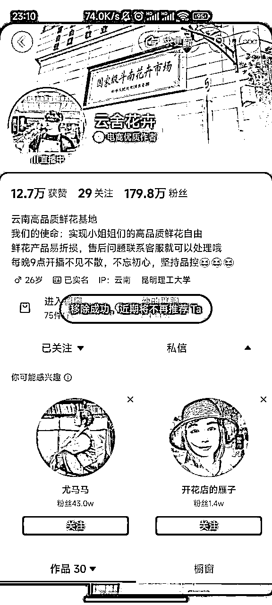
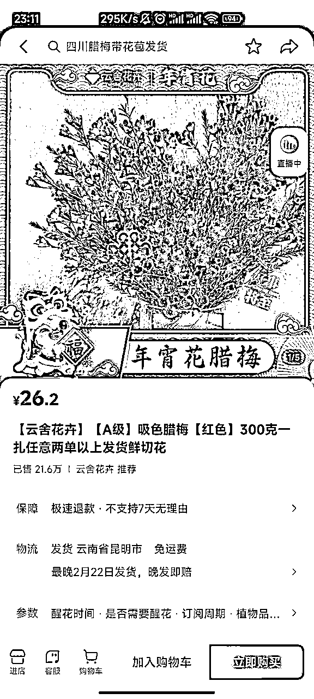
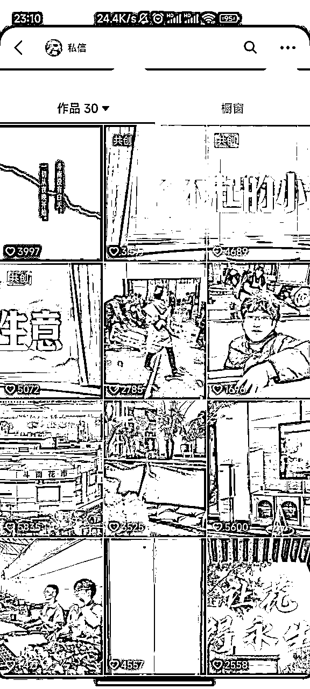
1 流量怎么运营？
第一步，搞清楚流量从哪里来。
一个平台流量通常分为免费流量与付费流量。
- 通过观察账号发布的内容、时间、数量、关键词等板块，了解他们如何通过优化内容形式，来拿到更多流量。
- 具体而言，要看内容形式是图文还是视频、实拍还是搬运、搬运的话如何去重不违规、什么样的选品方式、违规有什么后果、账号需不需要养号、用企业号还是个人号、不同账号权重是否一样、每天发布几条、账号起爆概率高不高、出现违规怎么办、搬运玩法能玩多久……
- 付费流量：每个平台都有自己的投放方式，整体要关注ROI（投入产出比）能否打正。
- 我们可以通过考古加等三方数据软件，查看账号的流量结构（feed数据与付费流量）
下面我们继续以云舍花卉进行流量拆解，看看它的流量到底从哪里来。
该账号免费流量主要来自图文、直播，下面将重点分析这两个板块，并且通过三方软件，查看付费流量的占比情况，从而得出一个完整结论。
1）视频信息（30天）
- 新增视频4条，其中挂车0条，基本都是随拍自己的一些情况，很朴实的介绍自身的发展。
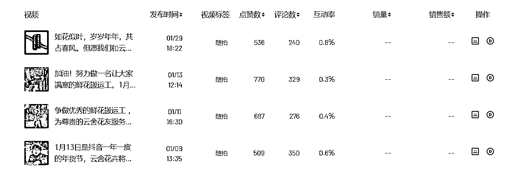
2）直播信息（30天）
坚持每日直播，直播占比99.99%，说明直播是很重要的一个转化板块。
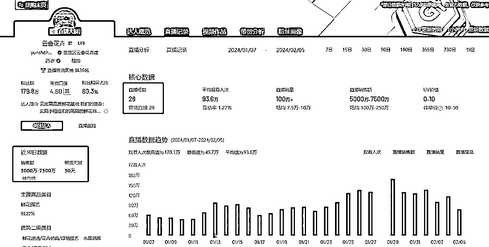
3）付费投流情况（单场直播）
付费流量占比不高，说明这个账号主要靠自然流运作。
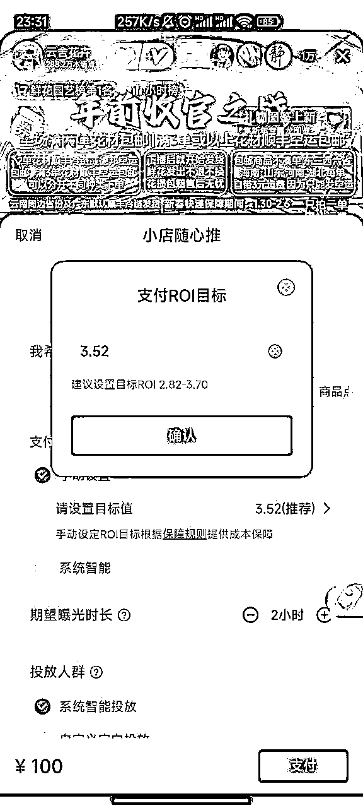
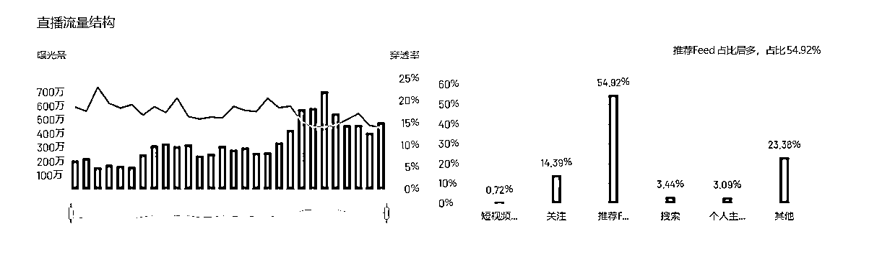
4）结论
- 直播：直播是转化的大头，占99.99%。通过坚持直播，也可以承接一部分视频来的流量。
- 付费流量：ROI只有3.52，不容易打正；没有显示付费流占比，说明该账号主要靠自然流推荐。
2 产品怎么解决？
产品环节，首先关注这个产品是否需要自己生产。
- 如果需要，则需要从源头开始，考虑产品的生产成本、垫付资金、对接厂家等问题。
- 如果不需要，则考虑如何对接供应链，为自己稳定供货；同时考虑不同平台商品价差，为自己牟取最大利益。
以电商项目为例，基本以选品为主。
- 优先考虑官方的选品平台，如抖音、视频号的精选联盟，可以直接带货分佣，售后无忧。
- 如果没有需要的产品类型，或者佣金很低，则可以自己去拼多多、1688等平台，找到对应的商家进行谈判、解决物流售后等问题。
下面我们继续以云舍花卉进行产品拆解，看看它的供应链到底是啥，具体产品价差是多少。
云舍花卉专卖花卉，显示的是抖音自营店。普通人想做的话，可以采用无货源模式，即抖音精选联盟直接带货，或联系拼多多商家供货。
1）抖音精选联盟
- 商品带货佣金率：贵的50元以上 10%，便宜的的20元以下的 20%
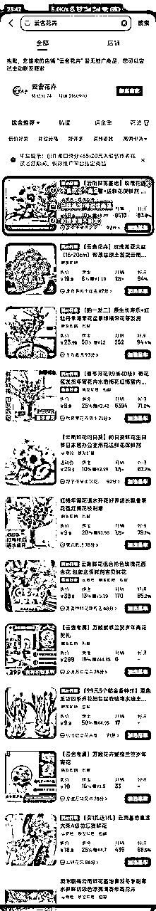
2）无货源模式
- 从拼多多或1688，可以搜到同款；找到同款后可与商家谈判，搞清楚售后、物流等环节如何解决。星球有非常多这方面内容，在此不过多赘述。
- 以粉钻单头康乃馨为例：利润率20%-60%（拼多多差价）
- 粉钻单头康乃馨差价：15.8元，利润率59%。抖音卖26.6，拼多多卖9.8
- 吸色腊梅差价：15.8元，利润率59%。抖音卖26.6，拼多多卖9.8
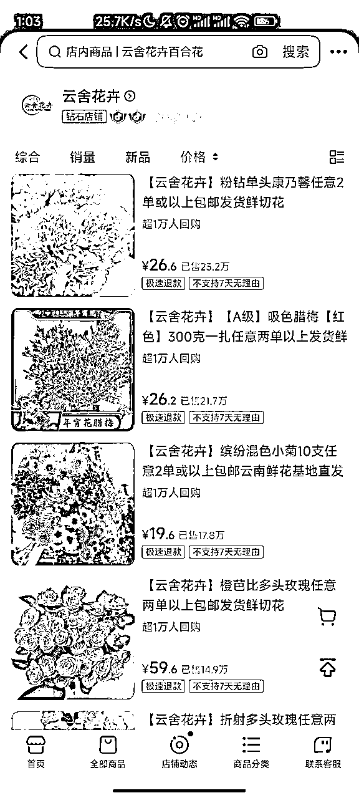
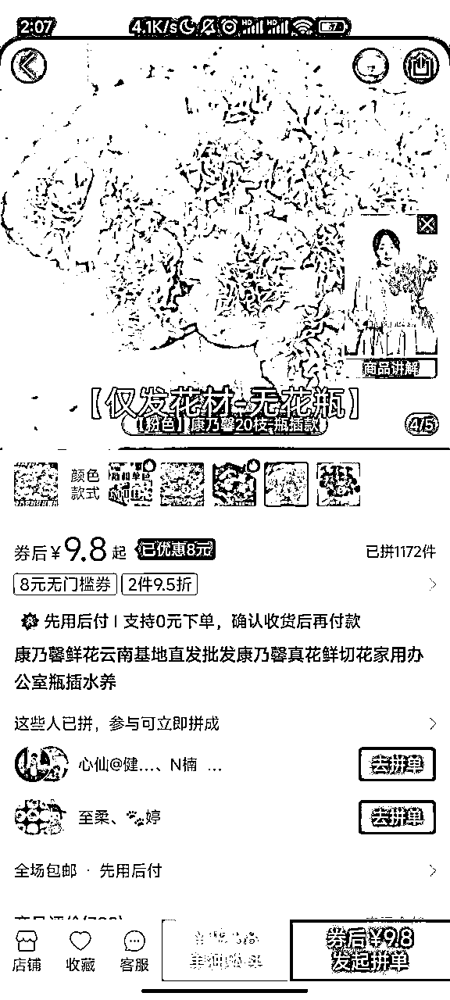
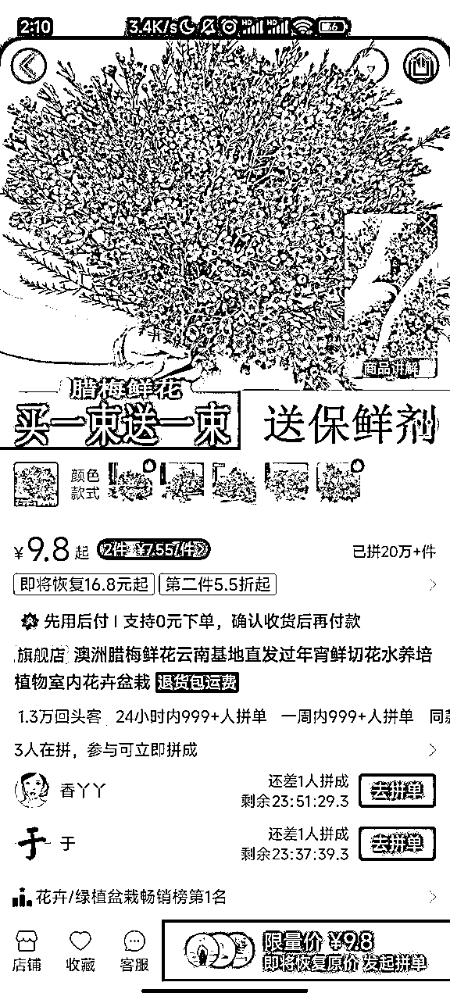
3 利润怎么核算？
利润的核算非常简单，本质上就一条核心公式：
利润=收益-成本
- 收益：可以通过三方数据平台看大致的收益空间；也可以通过店铺销量和销售额，计算大概的gmv。
- 利润率：通过精选联盟看佣金率，或通过不同平台差价，可以看出大致的利润率。
- 成本：需要考虑开店保证金、平台抽成、退货率、人力、物流、售后等多方面因素，考虑的要素越多，最终核算成本越精准。这些成本，可以从星球参考同项目的帖子，找找答案。
下面我们继续以云舍花卉进行利润核算，看看这个账号到底赚不赚钱。
1）收益分析
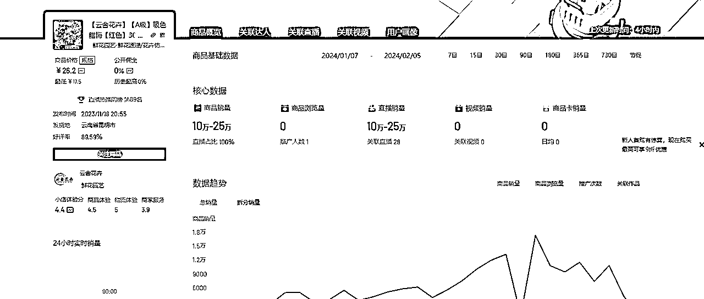
2）成本分析
- 资金投入：保证金+少许投流费用+垫付资金+工商执照费用。抖音开1家店的费用=2620+垫付资金
3）综合利润
- 按最低算（利润率59%，退货率40%，抽成5%，销售额10w），实际到手为3.36w
- 按最高算（利润率59%，退货率30%，抽成5%，销售额25w），实际到手为9.8w
最后减去前期的开店费用，综合来看，这个号是赚钱的，单店月利润区间为，3.09-9.53w。
4 项目如何做&如何放大
这一板块，我们需要考虑，如果是自己来做这个项目，会有哪些关键环节，可以怎么做？
综合上面的结论，我们可以给出一套属于自己的路径。
以云舍花卉为例，我们优先梳理：
- 项目的整体玩法是什么？靠图文怼量起号，再通过直播转化。
- 产品怎么解决？选品怎么选？走优选联盟则开通橱窗带货，解决千粉问题；走无货源模式则开通店铺，自己对接供应链，缴纳一系列保证金。
基本上搞清楚这些问题，我们就会对项目有比较深入的了解了。
1）项目如何做
一句话：图文/视频吸粉爆了直接直播带货
项目核心：人气值和带货值，把成交这个数据做好，每个平台都会有推流。
- 开通店铺
- 资金投入：保证金+少许投流费用+垫付资金+工商执照费用。抖音开1家店的费用=2620+垫付资金
- 开店：一个人办2-3个店；每个店都要有一个营业执照。店开多了容易连坐。
- 店铺过新手期可以加速回款。达到70分以上是T+4，70分以下是T+10。
- 开通橱窗（图文挂车）
- 条件为：实名认证；发10条视频；粉丝＞1000
- 找到对标账号（操作简单、涨粉快），进行模仿
- 选品方法
- 赛道定位：越垂越好，比如只卖裤子、只卖羽绒服、只卖打底衫。
- 整体流程：选品-测品-微付费，只要能正常测出一个小爆品一天20件 基本上一个月的利润过万是比较容易的
- 选品方法：找到15天内起的速度特别快的同行新号
- 测品标准：如果在五天内里面点击率没有超过15%的款，或者支付里没有超过5%的款承接
- 付费投放：投点付费，测一个品1-2千左右；投流软件：抖加、小店随心推、巨量千川、磁力金牛移动版、磁力金牛
- 图文起号
- 基本要求：画质清晰，数量大于等于 2 张
- 图片来源：选品或找对标账号时积累的素材；其他平台的素材；自己实拍（不建议）
- 图片去重：通过加贴纸水印、抠图、拼图、提升画质等方法，进行去重
- 连怼玩法：一天至少5条图文，用数量博取爆款概率。
- 口播直播
- 对于人播，口播的利润相对来说会低，利润在20-30%之间
- 直播时长：每场直播2-4小时
- 视频起号
a. 发一些真实的画面，说一些走心的话，然后因此不爆的视频
b. 实拍情景，让人感觉你是真实的
2）项目如何放大
- 矩阵放大
- 多店操作：一个人开2-3家店，基础保证金为2620*3=7860。
- 多账号操作：1人5个号，每天25条图文，相对比较轻松。但是直播比较吃力，可以找一个流量最好的号进行直播转化，其他4个号靠图文带货。
- 多平台操作：抖音成功后，可以将玩法同时复制到视频号、快手、小红书等平台。
- 付费投流
- 投流主要用于测品，测出爆品后，还是靠自然流进行转化
- 如果roi低于3，一般都属于打不正，亏本状态。
5 项目结论
从上面的分析来看，垂类视频+爆款的模式+直播确实是有机会的。单店月利润区间为，单品：3.09-9.53w，利润可观。
这种视频+直播的模式确实能做，但是对方视频的背景都是云南斗南的鲜花市场定位，那边给人以真实感。那我们普通人应该怎么做？视频可以混剪视频，直播的话就要打造一个花卉直播间。